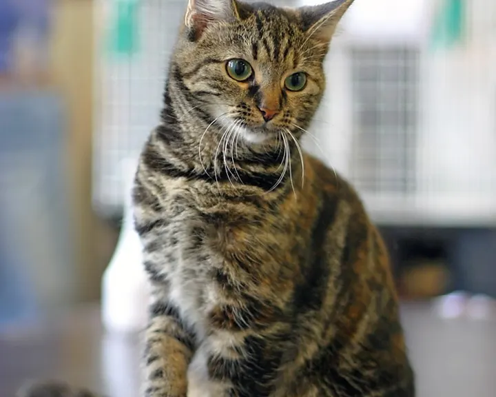
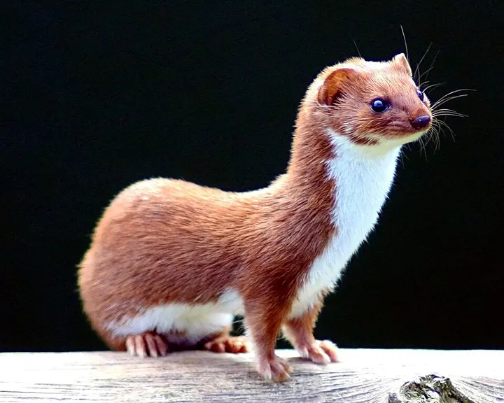

Wildkatze oder Hauskatze?
Die Wildkatze wirkt verwaschen gezeichnet und hat einen dicken Schwanz mit stumpfem, schwarzem Ende.


Die Unterschiede
| Wildkatze | Hauskatze | |
|---|---|---|
| Schwanz | buschig, 2–3 getrennte Ringe, stumpfe schwarze Spitze | meist dünner, spitz zulaufend, Ringe oft verbunden |
| Zeichnung | verwaschen, kaum Kontraste | oft kräftige Streifen oder Flecken |
| Rücken | schmaler Aalstrich endet an der Schwanzwurzel | Streifen laufen oft auf den Schwanz weiter |
| Nase | fleischfarben | unterschiedlich |
Merkhilfe: Sicher bestimmen lässt sich die Wildkatze oft nur genetisch, etwa über Haare an Lockstöcken.
Weitere Doppelgänger
-

LuchsFoto: Martin Mecnarowski (Quelle, öffnet in neuem Fenster), CC BY-SA 3.0 (Lizenztext, öffnet in neuem Fenster) WildkatzeFoto: Lviatour (Quelle, öffnet in neuem Fenster), CC BY-SA 3.0 (Lizenztext, öffnet in neuem Fenster) Luchs oder Wildkatze?
Der Luchs ist fast doppelt so groß, hat Pinselohren und einen kurzen Stummelschwanz.
-

WaschbärFoto: Rhododendrites (Quelle, öffnet in neuem Fenster), CC BY-SA 4.0 (Lizenztext, öffnet in neuem Fenster) 
MarderhundFoto: Доктор рукиноги (Quelle, öffnet in neuem Fenster), CC BY-SA 3.0 (Lizenztext, öffnet in neuem Fenster) Waschbär oder Marderhund?
Beide tragen eine Gesichtsmaske. Nur der Waschbär hat einen geringelten Schwanz.
-

HermelinFoto: James Lindsey (Quelle, öffnet in neuem Fenster), CC BY-SA 3.0 (Lizenztext, öffnet in neuem Fenster) 
MauswieselFoto: Keven Law (Quelle, öffnet in neuem Fenster), CC BY-SA 2.0 (Lizenztext, öffnet in neuem Fenster) Hermelin oder Mauswiesel?
Das Hermelin hat immer eine schwarze Schwanzspitze, das kleinere Mauswiesel nie.